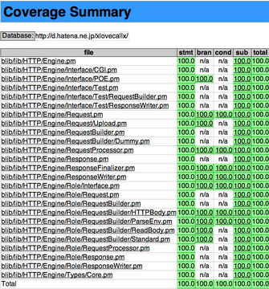

操作方法
- l キー: 次のページへ
- h キー: 前のページへ
- j キー: 目次ページへ
- k キー: 目次ページから戻る
- 目次ページでは j k キーで一覧を移動し、クリックで選択します

出勤しないで箱根行ったり海行ったりする生活をしてます。
あと、Shibuya.PM #15の懇談会で次のWeb+DB PRESSのPerl連載を誰に書いてもらおうか決めるだけの簡単なお仕事してます。
否定表現夏祭りだそうで、総長から Regexp::Assemble の話をしろと言われたので、正規表現を駆使して住所抽出した時の思い出話をします。
Google Maps APIが流行り始めて来て位置情報期に突入したYappoがGeography::AddressExtract::Japan (以下G::AE::J) を作ったので、その苦労話を位置情報業界の人をDISりつつShibuya.PM#7とYAPC::Asia 2007でプレゼンした。
作ったモジュールを使って、ニュースサイトの記事から位置情報を抜き出してGoogle Mapsに貼付けるデモとか披露したのも懐かしい。
G::AE::J は正規表現を多用しています。 (右のタブとか見る)
現存する正確な住所を抽出する目的で、郵便局で公開している郵便番号と住所が纏まったCSVファイルを元にして正規表現を作っています。
膨大な住所情報を、一つの巨大な正規表現にするのに手作業でやってられない。
(福島県|福岡県|福井県|山梨県|山口県|...)
((?:(?:福[島岡井])|(?:山[梨口])|...)県)
都道府県だと意味ないけど、通常の住所データは膨大なので圧縮したい。
速度は?さっきDanさんが最適化するって言ってたので実際に計測しましょう。 -> bench_regexp_or.pl
さっきDanさんが最適化するって言ってたので実際に計測しましょう。 -> bench_regexp_or.pl
その望みを叶える方法として、たまたま 本邦初公開！電話番号の正規表現 - にぽたん研究所 っていうブログを見て Regexp::Assemble を知ったのでした。
で、8回くらい前のShibuya.PMでドヤ顔で発表してたらLTだと言うのにdanさんが「それRegexp::Trieのが速いよ」と質問してくれました。
ここまであらすじ
第一回チキチキ Dan the Regexp Modules ソムリエ大会！
404 Blog Not Found:TRIE-Optimized Regexp というブログの中では、Regexp::OptimizerやRegexp::Assembleのようなモジュールもある。ただこれらはTrie以外のOptimizeもしてしまうので、ちょっと重たいらしい。
鵜呑みにするな計測しろ。という事でRegexp::Assembleとの比較。
$ bench_regexp_create.pl
Rate Assemble Trie
Assemble 41.7/s -- -75%
Trie 167/s 300% --
4倍くらい速い
$ bench_regexp_search.pl # 実際動かす
あんまり変わらない。
僕は Regexp::Assemble をおススメすると。
俺も二年前からテストカバレッジ100%期だったわーやべーやべー
さっきDanpoさんからご紹介をうけましたが、多分 R::A マイスターのニポサンタンが後で発表すると思うので自重します。
ここから本編ですが、皆さんは往々にして特定の文書群に対して特定のキーワード群があったら特定のマークアップを施すという業務を行う事があると思います。
そう、今からターミナルでお見せする html_keyword_ra.pl のようなスクリプトです。
数千個のキーワード群程度だったら、そこそこの速度で動くでしょう。しかし数万、数十万のキーワードになったらどうしますか?
| それ Groonga で解決できるよ |
そうです、Groongaがあるのです。 html_keyword_groonga.pl のようにすれば Regexp::Assemble で作った物と同じ動きになります。Patricia Tree使って辞書に登録されてるキーワードかを見てるだけなので比較的速いのです。
本当に速いのかよ？って突っ込みがでますよね。実際に正規表現での処理とGroongaでの処理の比較を見てみましょう。
$ bench_regexp_groonga.pl 10
$ bench_regexp_groonga.pl 100
$ bench_regexp_groonga.pl 1000
$ bench_regexp_groonga.pl 5000
キーワードの数が増えると正規表現の方が速度が顕著に下がりますが、Goorngaの方は比較的安定してるのが解ると思います。
正規表現は万能です。しかし万能ナイフでワインを開けるよりもソムリエナイフでワインを開けたほうがモテます(実話)。TPOに見合った道具をチョイスしてみんなでモテましょう。
モテたいってZyngaのエンジニアも言ってた。
ご清聴有り難うございました。
以上 Perl5 Groonga Project の宣伝でした。
https://github.com/yappo/p5-Groonga